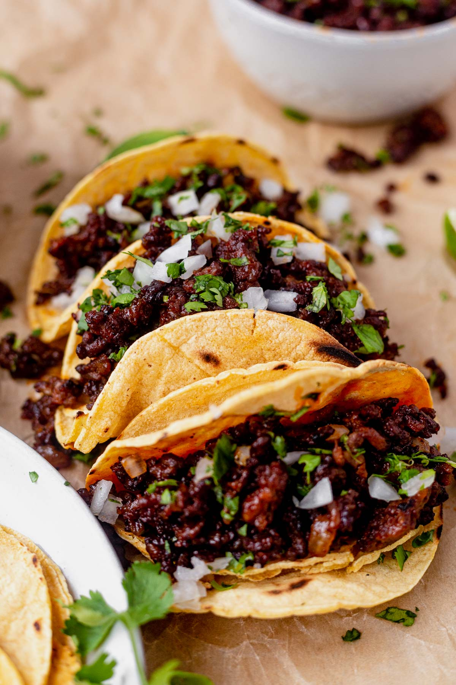

Tacos

Amazing Street Tacos
Easy and tasty street taco recipe passed down in my family for generations.
Street tacos are delicious, amazing, and oh so mouthwatering! Bite into tender
steak, zesty lime flavor with a hint of spice and add on tomatoes, avocado, and
onions for a savory bite you are going to love! These street tacos are completely
jam-packed with flavor and they are so easy to make. I love how the meat is so
tender and juicy and only takes an hour to marinate!
Ingredients
- Flank steak or skirt steak: Preparation of the steak is key to this dish.
- Soy Sauce
- Worcestershire sauce: This will be your friend on this steak.
It brings the marinade together.
- Lime: You can use lime juice from a fresh lime or any juice that you may
already have on hand (about 2 Tablespoons).
- Minced garlic: If you aren’t using fresh garlic cloves, you can use the
minced garlic you already have (½ tsp usually equals 1 clove of garlic).
- Cilantro: This garnish is optional, but if you choose not to use it, God
help your soul.
- Chili powder: This will give you a little bit of spice without too much heat.
- Cumin: Cumin adds in an interesting flavor, don’t forget this spice!
- Salt and pepper: Add this in to your preferred taste.
- Flour or corn tortillas: Make sure that you are using the smaller tortillas
(not burrito size).
Steps
- Cut and mix: Cut the flank steak into one inch pieces. In a medium sized bowl
add the soy sauce, Worcestershire, juice from one lime, cilantro, chili powder, cumin, and salt and pepper.
- Marinate: Add the steak and let marinate in the fridge for 1-2 hours.
- Cook the meat: Heat a medium sized skillet to medium high heat. Add the steak and marinade and cook for about 5-7
minutes or until no longer pink.
- Add toppings: Put the steak in the center of your tortilla with desired toppings.